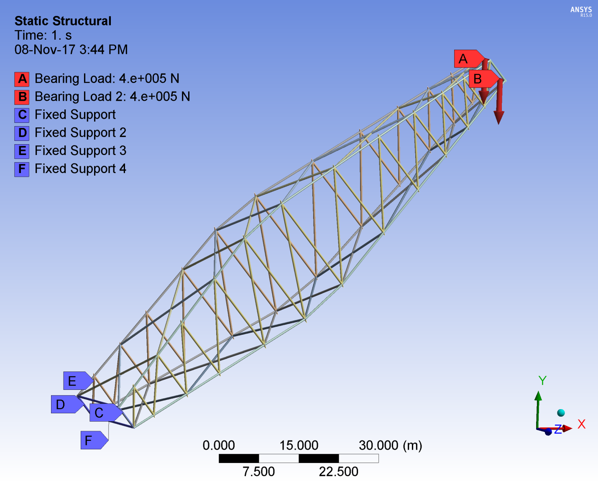
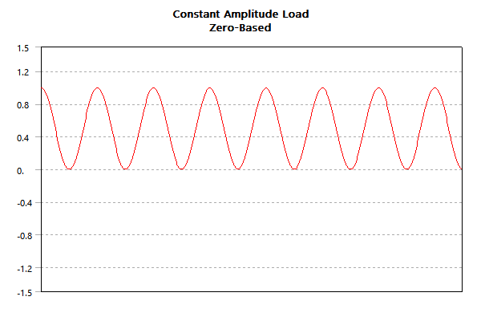
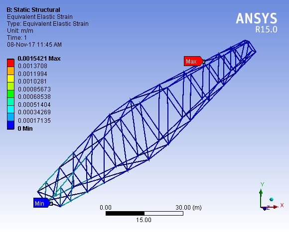
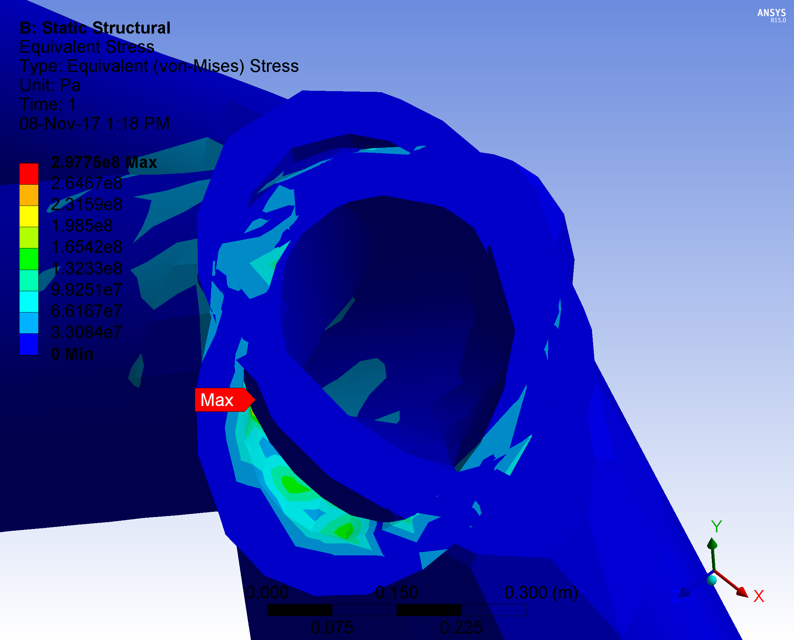

Contact Us
- +91 7903725511


30 July 2022
Mining draglines are large mining machines which have a boom of about 100 m in length. The booms are tubular structures made up of three large chords connected by smaller lacing tubes. There is a regular cracking phenomenon at the welds which means that the cracking must be remotely detected, exactly located and repaired. In this study, the three-dimensional (3D) dynamic dragline models are developed for investigating the dynamic dragline performance and front-end structural strength. A virtual prototype of the dragline is created by the dynamic integration of the mechanical model of the dragline boom. The model is evaluated for failures due to static loading and the points of failure are indentified.After the identification of the point, modifications are made to the joint with the highest failure probability. The method is manufacture of a separate block and the tubes to be welded on that block. This gives more thickness to the most critical points providing better strength and longer life of the boom.
A dragline is a large rotating multi-body system to remove overburden in surface mining environment. The repeated dynamic, instantaneous loading accumulates over the dragline service life, and it may induce front-end damage. Fatigue failure in components causes unplanned downtimes, reduced efficiency and high production costs. The primary objective of this study is to examine dragline front-end life towards efficient operation. The structural loading on dragline front-end depends mainly on the rated suspended load, and the accelerations created by hoist and swing motors. Other factors such as the digging pattern, operator characteristics and electrical motor control systems also influence the loading on front-end. In order to calculate the overall stress loading of front-end, it is necessary to build the dragline virtual prototype just as to build a physical prototype. For this purpose, 3D dynamics of the dragline must be modeled and analyzed. Conventional design process uses a laboratory test to simulate the dragline front-end to detect the cracking for the reduction of component fatigue failure. This process is very costly and time-consuming for achieving statistically significant basis for evaluation and subsequent decisions. Previous researchers have developed a dynamic model in dragline operation and studied the component fatigue failure by the field-testing data or recently, virtual prototype simulators have been used to simulate surface mining equipment Modern design processes in virtual simulation environments enable the testing of machine performance and component fatigue failure prior to final design and field-testing. One of the observed failures of this machine is in the welds of its booms. This causes a halt in production and may cause accidents. A weak weld may cause it to damage soon lowering the production of the quarry. This project is a step towards improving the strength of the joints and making them less prone to failure. Elements of the boom are welded on the main pipe at junctions. These junctions are an intersection of 4 to 6 elements. Observing the joint, we can see how these are welded overlapping on each other. These overlapping welds create sharp angles and lead to increase in stress concentration on the welds. This leads to premature failure of the welds. The main task is to identify the joints which suffer maximum stresses. For the analysis we created a boom using Ansys 15.0 and fixed its one end like in dragline and applied the force on the other end (i.e. where bucket is attached). After doing the analysis we get about four to five joints of maximum stresses and these joints are prone to failure of the welds. This can be improved by welding the elements on a block welded to the main pipe. This reduces the stress concentration of the junction. Also the welds are perpendicular to the elements hence the force acts perpendicular to them. There is no shear component acting on the joints. Thus it leads to lowering of chances of failure of the weld. The block to be welded on main pipe should be welded during the manufacturing of boom. This will of course increase the weight and cost but it also increases the boom life, resulting in higher productivity due to less failures.
Fig. 1 illustrates a schematic diagram of walking dragline. The lower body provides a stable base for the dragline. The upper body provides a platform for the hoist-drag-swing machinery, boom and tri-stricture attachment, electronic control cabinets, operator’s cab and supporting equipment. The front-end mechanism consists of a large bucket which is suspended from a boom with wire ropes. The bucket is maneuvered by hoist and drag ropes, powered by electric motors. The work cycle of the dragline consists of three distinct phases, including digging, swinging, and swinging back. In a digging phase, the bucket is positioned above the material to be excavated. Then, the bucket is lowered and the drag rope is drawn so that the bucket is dragged along the surface of the material. The bucket is lifted by using the hoist rope. A swing operation is performed to move the bucket to the place where the material is to be dumped. The drag rope is released causing the bucket to tilt and empty by the dump operation. Finally, the bucket is swung back to repeat the cycle.
On the points A and B bearing loads of 400000 N are applied as shown in the figure. The lower part of the dragline boom is fixed to the main frame at points C, D, E and F. Usually this part is hinged and is rotatable, but for simplification of design, four fixed points are considered. They will be static points and not allowed movement in any coordinate of any amount of rotation. The strains in the boom are not considered to move these points. While the rest of the boom is free to move due to the load acting on the top points A and B.
After the simulation is run, the results displayed are shown in figure 6. The point of maximum and minimum strain is shown.
Continuous subjection to stress cycles causes fatigue failure. Forces acting through the hoist ropes and the inertia forces due to accelerations contribute to fatigue failure. The location of the cracking is often embedded underneath the lacing. Main chords are pressurised with air so that cracks can be detected using loss of air pressure. The analysis of results and proper inspection shows that the points of most common and frequent failures are the weld points. This conclusion coincides with the observation in the industry. Several dragline booms face the failure at their weld points in the industry. One the reason is the steep angles in the weld which leads to stress concentration effects in the weld. Several tubes need to be welded at the same point to form the truss required. Large number of tubes led to packing in the joint and tubes being placed at very small angles to each other. Also there are deformations due to heating and cooling caused by the welding which affects the stress concentration. The point of maximum stress is observed to be in the junction where the pipes are welded onto each other. The overlapping of the pipes creates sharp angles leading to increment in stress concentration in the joint. 
Observations verify the failure of joints in the welded areas. One more reason being the increase in brittleness and decrease of strength in the heat affected zone. Also the amount of skill and time required to weld a conventional joint is high. There are curved surfaces and the ends of the pipes also have to be cut in curves for it to perfectly fit onto the surface of the main pipe and be welded on it. Thus one of the ways to make the joints stronger is improving the geometry of the welds in the truss. The method is to have a preformed hollow block and members of the truss be welded on this block. To reduce failure we can use a metal block during manufacturing of boom.Solid joint section with pipes welded on it rather than welding the pipes onto one another. Due to larger cross sectional area, the stress is less on the joint. There shall be hollow cavity in the section to allow inspection gases to pass. The weld block is to be manufactured by casting. The dimensions and angles of the block are to be determined from the initial welding of the truss elements without the block. The model of the junction structure is to be made.
The affects caused by this change in design: • As the life of weakest joints is increased, so life of boom increases. The joint is strengthened and its reliability increases. The rate of failure decreases and the time to next maintenance increases. • Material lifting capacity increases. The overall lifting capacity of the boom improves as this design gives more strength to the joint • The manufacturing process gets more complex as we need detailed measurements and angles of the surface of the block has to be perfect. As we are adding material, so weight of boom increases. Cost of manufacturing increases. • Production: Joint blocks to be casted, each with specification of number of elements it is to be joined with and the angle of joint. The optimization of the production of blocks can be made based on the symmetry of the joints in the truss Pipes to be then welded on the blocks.